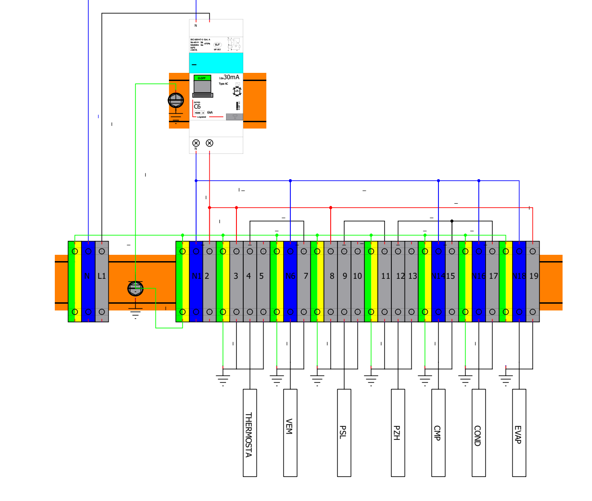
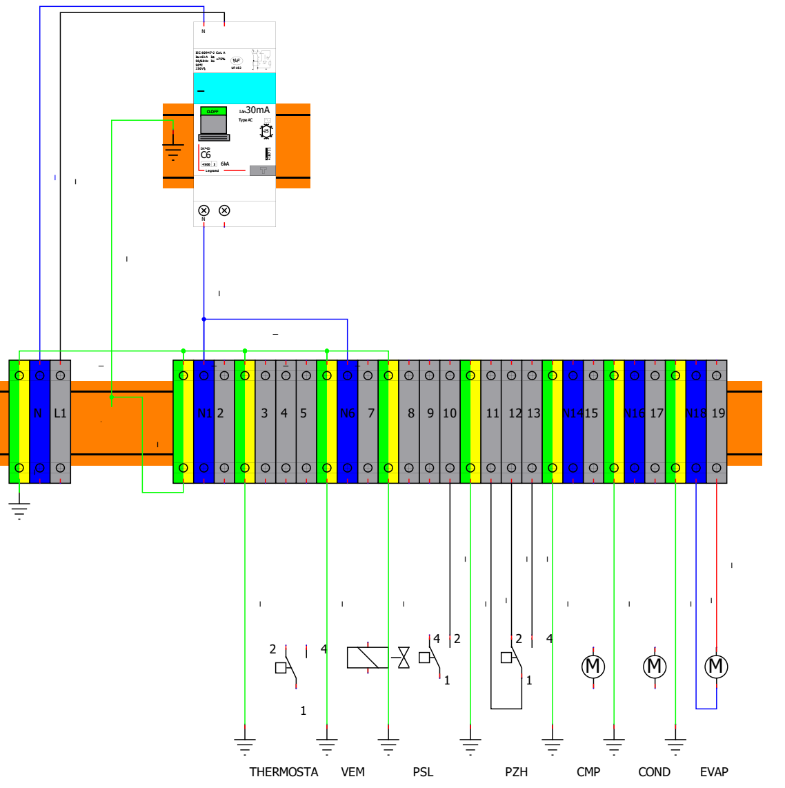

Aide. La table des bornes est sur la fiche ressource
(dernières pages) — je la garde ouverte au poste, je n'écris pas dessus.
inerWebÉdu
par F. Henninot · LPP Jacques Raynaud — Campus ÉQUATIO
TP2-Bpartie B2
B2Je pose les ponts4 points
Un pont, c'est quoi ? Un pont relie deux bornes voisines du bornier.
Elles doivent porter le même courant. Un pont remplace un fil que je n'ai pas besoin de tirer jusqu'à
un appareil.

Le même bornier, ponts déjà posés — je les repère.
ENTRE QUELLE BORNE ET QUELLE BORNE
POURQUOI
inerWebÉdu
par F. Henninot · LPP Jacques Raynaud — Campus ÉQUATIO
TP2-Bpartie C
CJe câble4 points
Toujours hors tension. Je câble dans cet ordre :
Je vérifie que tout est hors tension.
Je dénude le fil à la bonne longueur.
Je pose l'embout, je sertis.
Un seul fil par borne.
Je serre la vis.
Je tire doucement pour vérifier.
Je coche chaque départ quand il est câblé, puis quand je l'ai vérifié.
DÉPART
CÂBLÉ
VÉRIFIÉ
THERMOSTAT
☐
☐
VEM
☐
☐
PSL
☐
☐
PZH
☐
☐
CMP
☐
☐
COND
☐
☐
EVAP
☐
☐
✔Autocontrôle2 points
☐ aucun fil nu qui dépasse ☐ chaque borne serrée
☐ ponts posés comme sur le schéma
J'appelle le professeur pour la mise sous tension. Visa : ______________
inerWebÉdu
par F. Henninot · LPP Jacques Raynaud — Campus ÉQUATIO
TP2-Bcompte-rendu
Ma fiche compte-rendu
Barème : Sécurité 2 · A 3 · B1 5 · B2 4 · C 4 · Autocontrôle 2 = 20.
Je colorie mon niveau.
COMPÉTENCE
0
1
2
3
4
C3.6 · T10 · S5.6
—
Erreur borne
Aidé
Seul, conforme
Explique
C3.7 · T11 · S6.2
—
Interdit
Rappel
Seul
Anticipe
C2.2 · S2.1
—
Mal lu
Aidé
Juste, seul
Justifie
Savoir-être
—
Interdit
Rappel
Rangé seul
Entraide
0 → NE · 1 → NA · 2 → EC · 3 → M · 4 → PM — NE non évalué · NA non acquis ·
EC en cours · M maîtrisé · PM parfaitement maîtrisé
par F. Henninot · LPP Jacques Raynaud — Campus ÉQUATIO
RESSOURCE BORNIER1/3
RESSOURCE — CÂBLER LE BORNIER DU PUMP-DOWN
À garder au poste, à consulter, à ne jamais écrire dessus.
Un exemplaire par binôme.
Les trois commandes — chacune a un commun (1) et deux sorties (2 et 4)
TH — thermostat
PSL — pressostat BP
PZH — pressostat HP
La table des bornes du bornier
DÉPART
SES BORNES
Arrivée réseau
N · L1
Sortie disjoncteur
N1 · 2
THERMOSTAT (TH)
3 (commun) · 4 · 5
VEM (vanne)
N6 · 7
PSL (pressostat BP)
8 (commun) · 9 · 10
PZH (pressostat HP)
11 (commun) · 12 · 13
CMP (compresseur)
N14 · 15
COND (condenseur)
N16 · 17
EVAP (évaporateur)
N18 · 19
Une borne de terre (vert/jaune) sépare chaque groupe.
Les numéros qui commencent par N sont les neutres.
inerWebÉdu
par F. Henninot · LPP Jacques Raynaud — Campus ÉQUATIO
RESSOURCE BORNIER2/3
Les fils — section et couleur
FIL
SECTION
COULEUR
Commande
1,5 mm² (H07VK)
rouge et bleu
Puissance
2,5 mm² (H07VK)
noir
Terre
—
vert et jaune
La commande alimente les thermostats et pressostats (petit courant). La puissance
alimente le compresseur, le condenseur et l'évaporateur (gros courant). La terre n'est jamais coupée,
jamais pontée.
Toujours hors tension. Je ne câble jamais sous tension. La mise sous tension est
faite par le professeur seul, après visa.
Sertir un embout — la méthode en 4 gestes
Je dénude le fil sur la longueur de l'embout, pas plus.
J'insère le fil dans l'embout, jusqu'au fond, aucun brin ne dépasse.
Je sertis avec la pince adaptée, une seule fois, bien au milieu.
Je tire doucement sur le fil : l'embout ne doit pas bouger.
Erreur fréquente. Un embout trop serti se casse. Un embout mal inséré laisse un brin
nu qui touche la borne voisine.
inerWebÉdu
par F. Henninot · LPP Jacques Raynaud — Campus ÉQUATIO
RESSOURCE BORNIER3/3
Le bornier au complet — ma référence de câblage

Le bornier complet, avec les fils déjà tirés — c'est ce que mon binôme et moi devons obtenir.
TOUT LE PACK FLUIDES · À LA MAISON COMME EN ATELIER